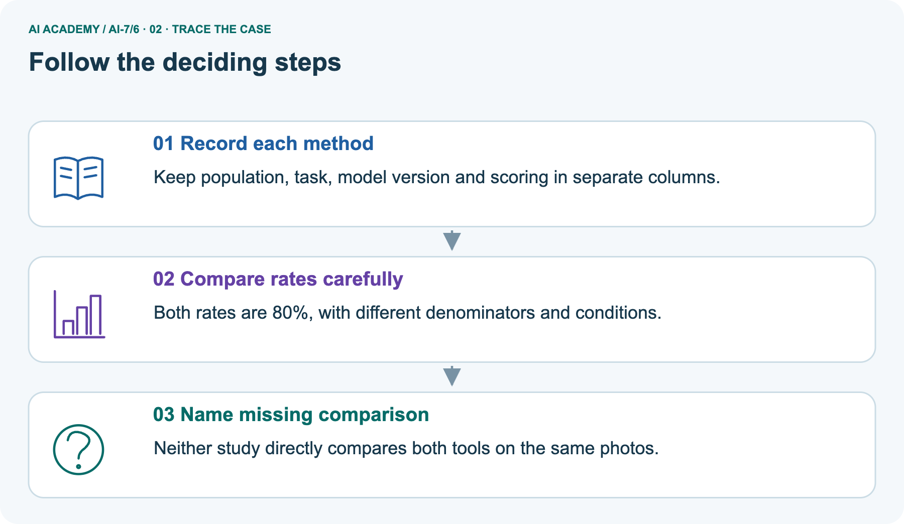
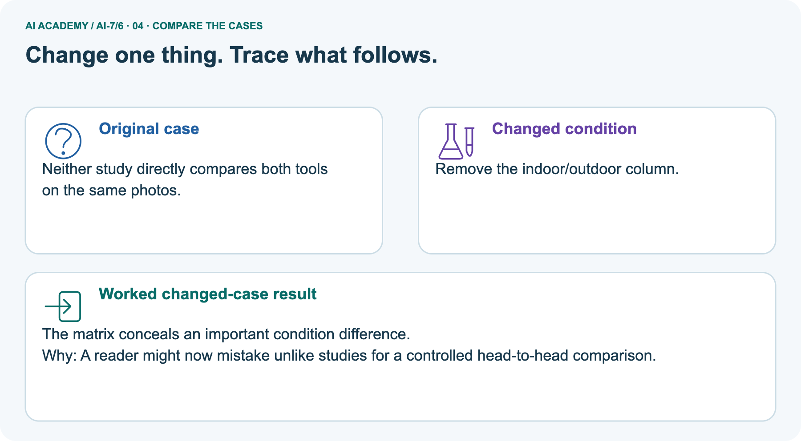
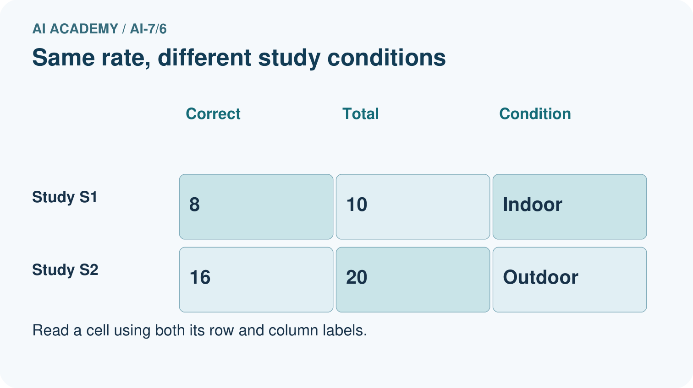
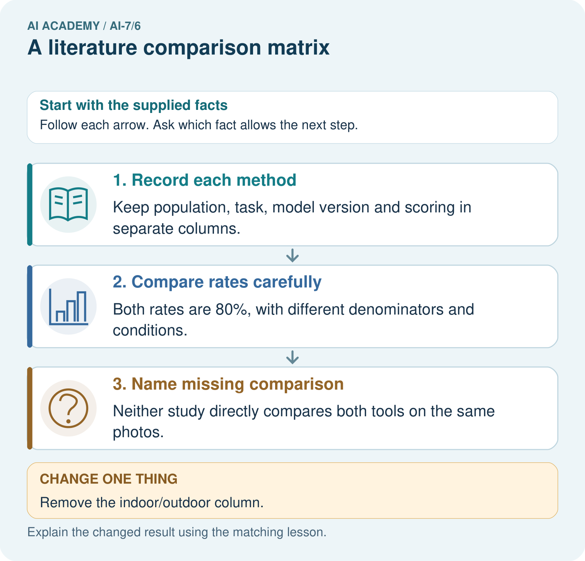
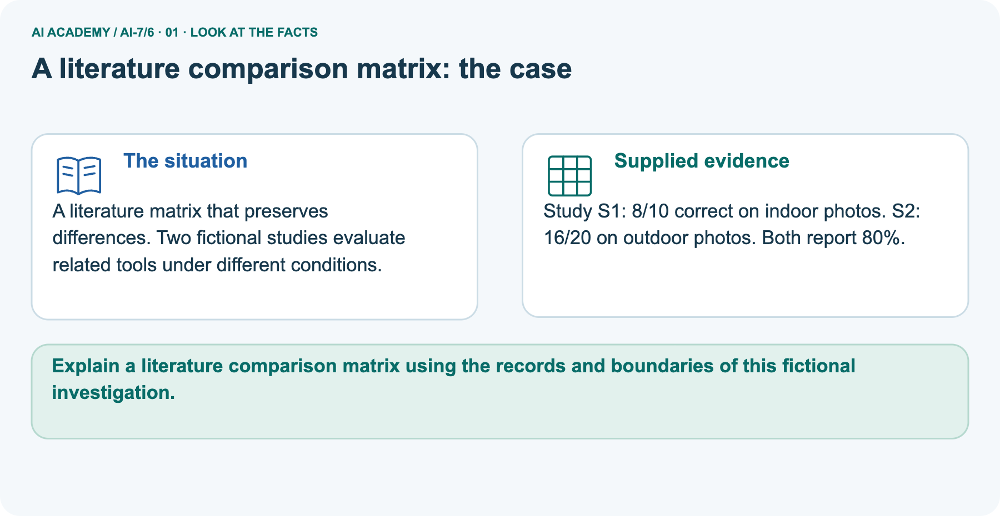
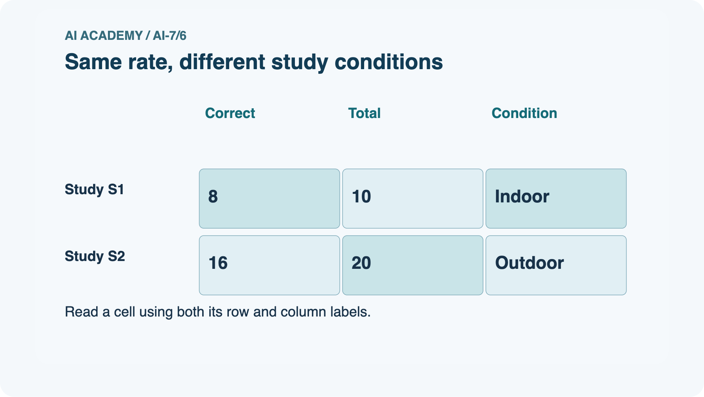
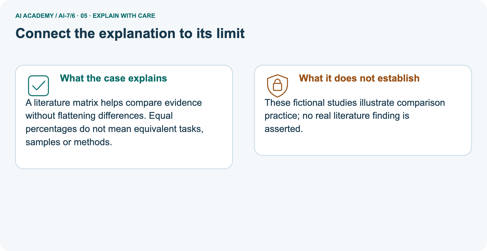
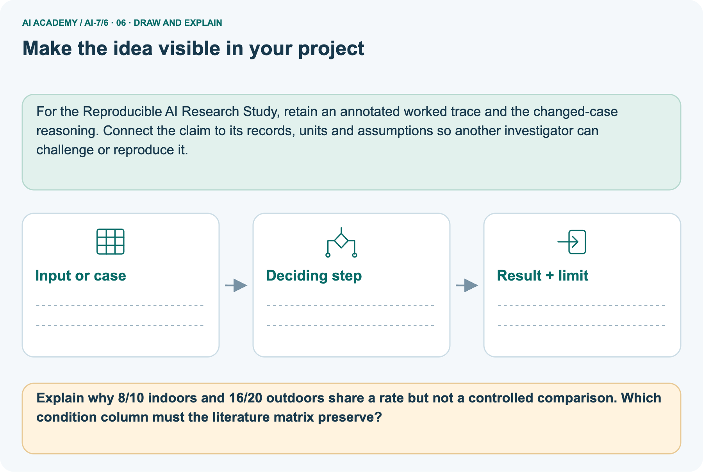

AI Academy · Level 7 · Grade 12 · Week 6 · Student lesson
A literature comparison matrix
Learn to understand, design, build, test and explain AI systems responsibly.
Project: Reproducible AI Research Study
THE CONNECTED WEEK
Keep the meaning beside the number. Preserve the missing fields.
Build a complete fictional literature matrix and justify comparability without forcing headline-score rankings.
Keep one habit: Matrix contract → different-task filled table → indoor/outdoor picture → missing-field probes → reconstruction protocol → independent metric/corpus mismatch.
Main lesson · Section 1
Compare study meanings before comparing headline numbers
Preserve task, metric, cases and missing fields in one matrix.
Learning goals
I can explain the mechanism and terminology of a literature comparison matrix.
I can apply the stated procedure to a new case with a traceable result.
I can identify an assumption or limitation and design a revealing follow-up.
Retrieve source versions, methods and evidence scope
Close your notes first. A rough first answer helps us choose the right starting point; it is not a score for your ability.
Without opening the old lesson, explain one key idea from Replication and reproduction. Give an example and a mistake that the idea helps you avoid.
Without opening the old lesson, explain one key idea from Finding primary research. Give an example and a mistake that the idea helps you avoid.
After trying, check the relevant lesson or ask your teacher. Change the part of your explanation that the evidence shows was wrong.
Prerequisite and starting response
Recall Replication and reproduction. Explain why a recorded result needs its input conditions and evidence source before it can support a claim.
End goal
Explain a literature comparison matrix using the records and boundaries of this fictional investigation.
Earlier wording, alternatives and picture transcripts
Your learning target
Remember before reading
This week you will practise:
Explain the mechanism and terminology of a literature comparison matrix
Apply the stated procedure to a new case with a traceable result
Identify an assumption or limitation and design a revealing follow-up
Retrieve what you already know
This week’s end goal
Main lesson · Section 2
Define a matrix that retains differences and uncertainty
A well-filled table explains why a direct ranking may be unavailable.
Begin with two percentages measuring different tasks
Imagine one study reports ninety percent classification accuracy and another eighty percent claim support for generated answers. Sorting 90 above 80 does not make the first tool better for the second task. A literature matrix keeps the meaning of each result beside it: question, data, unit, baseline, metric, split, resources and limitations. “Not reported” is useful information.
It is more honest than inventing a denominator or filling an unknown version from another study.
Define a literature comparison matrix
A literature matrix compares studies using aligned columns rather than sorting headline numbers with different meanings.
Complete study-field and comparison contract
| Matrix rule | Complete fictional comparison protocol |
|---|---|
| Study identity | Keep exact source/version/locator when known; supplied examples have no real citation |
| Question and task | Name what each study evaluates before comparing outcomes |
| Cases and unit | Record dataset/population, sample denominator and experimental unit; mark absent details not reported |
| Baseline and metric | Keep reference method, outcome definition, cutoff and aggregation rule |
| Split and resources | Record training/evaluation separation, environment and resource measurements if supplied |
| Limitations | State known task/condition gaps and unknown methods |
| Comparison judgment | Aligned for a stated purpose / different known fields / insufficiently reported; no automatic rank |
| No invented counts | A percentage alone does not supply its raw numerator or denominator |
| Scope | Fictional matrix practice, not real literature synthesis, pooled meta-analysis or tool recommendation |
Name supplied and missing evidence
Earlier wording, alternatives and picture transcripts
Begin by writing the question the procedure is intended to answer. Identify the information already supplied, the information it will produce and the information still missing.
These are constructed classroom examples; they do not require live accounts, private records or an external service. Do not treat a plausible explanation as a measured outcome.
Main lesson · Section 3
Trace the main studies through a completed meaning-preserving matrix
Unknown denominators stay unknown rather than becoming convenient fractions.
Original matrix-field procedure
Record question, data, unit, baseline, metric, split, resources and limitations. Mark incomparable fields rather than forcing a ranking.
Complete main task/metric/unknown-field matrix
| Main matrix field | Study A supplied record | Study B supplied record |
|---|---|---|
| Task | Classification, described as easy | Generated answers, described as difficult |
| Reported metric/result | Accuracy90% | Claim support 80% |
| Dataset/corpus and version | Not reported | Not reported |
| Evaluation unit | Classification cases implied; exact definition not reported | Claim versus whole-answer aggregation not reported |
| Raw count/denominator | Not reported; do not invent 9/10 | Not reported; do not invent 8/10 |
| Baseline/model version | Not reported | Not reported |
| Split and resource conditions | Not reported | Not reported |
| Known comparison gap | Different task/outcome from B | Different task/outcome from A |
| Valid conclusion | A’s headline percentage is numerically higher | No direct cross-task superiority follows |
State the comparison still needed
Before applying the procedure, write its units, denominator or decision boundary where relevant. A partner should be able to repeat each step using the same inputs.
If a required input is absent or violates the stated contract, record that condition explicitly instead of quietly replacing it with a convenient value.
Explain the visual
Point to the input, the deciding step and the result in this week’s visual. Explain the same step in ordinary words. A picture helps when you can say what each part represents.
Earlier wording, alternatives and picture transcripts
A literature comparison matrix — evidence trace
Connect the picture and the explanation
Main lesson · Section 4
Predict a matrix that hides indoor versus outdoor conditions
Removing a column removes information, not the underlying difference.
Current task and response
Study A reports accuracy 90% on easy classification; B reports claim support 80% on difficult generated answers. Show the intermediate steps and give the conclusion with its scope.
Predict the missing-condition column
Change: Remove the indoor/outdoor column.
Check after predicting
Prediction: The matrix conceals an important condition difference.
Reason: A reader might now mistake unlike studies for a controlled head-to-head comparison.
Earlier wording, alternatives and picture transcripts
Compare a familiar case with a changed case
Change one thing in the pictured case
Main lesson · Section 6
Read equal rates alongside different case conditions
Keep denominators and missing alignment details visible.
Main different-task comparison and checked limit
Study A reports accuracy 90% on easy classification; B reports claim support 80% on difficult generated answers.
Different tasks and metrics cannot establish A superior to B. Keep separate columns and identify a common evaluation needed.
Compare the intermediate evidence with the final statement. Explain why each number or decision follows from the stated inputs.
The conclusion belongs to this scenario and procedure; changing the inputs, evaluation population or authority can change what it establishes. Retain the raw record so a later revision can be compared honestly.
Separate indoor/outdoor records and complete matrix
A literature matrix that preserves differences. Two fictional studies evaluate related tools under different conditions.
Study S1: 8/10 correct on indoor photos. S2: 16/20 on outdoor photos. Both report 80%.
The picture is a separate photo-study comparison. S1 reports 8/10 correct on indoor photos; S2 reports 16/20 on outdoor photos. Both rates are 80%, but the samples, denominators and conditions differ. Neither supplied record directly evaluates both tools on the same photos. Equal percentages do not establish equivalent performance or identical uncertainty.
Removing the indoor/outdoor column makes the matrix less informative while leaving the original difference intact. To answer a shared application question, first define an appropriate common task, eligible data, scoring, versions and conditions; a matrix by itself does not run that evaluation.
| Separate picture matrix field | S1 | S2 |
|---|---|---|
| Photo condition | Indoor | Outdoor |
| Correct / evaluated | 8/10 | 16/20 |
| Observed correctness rate | 80% | 80% |
| Exact photo IDs/population | Not reported | Not reported |
| Tool/model version and baseline | Not reported | Not reported |
| Scoring comparability | Correctness reported; exact label protocol not supplied | Correctness reported; exact label protocol not supplied |
| Split/resources | Not reported | Not reported |
| Direct same-photo A/B evaluation | Not supplied | Not supplied |
| Interpretation | Indoor supplied-set result | Outdoor supplied-set result; no direct equivalence/ranking established |
Trace study methods, descriptive rates and missing comparison



Read the picture one step at a time
A literature matrix helps compare evidence without flattening differences. Equal percentages do not mean equivalent tasks, samples or methods.
Predict removal of indoor/outdoor column
Change one thing: Remove the indoor/outdoor column. Predict the result before checking the explanation. What remains the same?
Check after predicting



Explain fictional-study scope and preserved conditions
These fictional studies illustrate comparison practice; no real literature finding is asserted.
Read the labelled picture: Explain why 8/10 indoors and 16/20 outdoors share a rate but not a controlled comparison. Which condition column must the literature matrix preserve?
Earlier wording, alternatives and picture transcripts
Learn from the worked case
Cover the result before checking it. Say what is given, choose the procedure, and follow one step at a time. Then uncover the result and explain your first mismatch. Ask why a step is allowed, not only what number it produces.
A pictorial worked case: A literature comparison matrix
The facts we will use






Why this result follows
What this example does not establish
Main lesson · Section 7
Audit hidden differences, absent fields and forced rankings
A comparison table should preserve reasons for caution rather than flatten them.
Core matrix qualification and failure analysis
A matrix documents comparison limits; it does not create missing common evidence.
A useful check asks what would make the reasoning fail. Distinguish a failure to execute the declared procedure from a weakness in the procedure itself.
The first may require a correction; the second requires an explicitly revised method and new evidence. Preserve unsuccessful cases so an improved result cannot hide the original problem.
Complete comparability and missing-field probes
| Literature-matrix probe | Expected interpretation |
|---|---|
| 90% and 80% use different tasks/metrics | Do not rank tools by the scalar numbers alone |
| Same80% on different samples | Equal observed rates, not established equivalence |
| Denominator absent | Mark not reported; no reconstructed raw count |
| Indoor/outdoor field removed | Important known condition hidden |
| Both sources omit a field | Unknown agreement, not proven matching conditions |
| Different metric/cutoff/corpus | No direct score ranking; align the intended comparison first |
| One study has more cases | More reported cases alone does not solve task or quality mismatch |
| Average incompatible percentages | No meaningful pooled result without a justified common estimand/protocol |
| Matrix completed | Evidence organization, not new experiment or causal synthesis |
Guided repair and explanation
A report omits this qualification: A matrix documents comparison limits; it does not create missing common evidence. Explain how omitting it could change a reader's interpretation, and write an accurate replacement.
Earlier wording, alternatives and picture transcripts
Locate the earliest unsupported step
Main lesson · Section 8
Practise explaining a comparison gap using named fields
Propose what needs to be aligned rather than choosing the larger number.
Current explanation and guided check
Explain the weekly mechanism in your own words. Use the worked scenario to name its input, decision rule and output.
Supported W2 trace
Use workbook W2 for the connected example “A literature comparison matrix”. First fill the input and rule boxes. Try the middle steps before asking for a hint. After a hint, try the next step yourself.
| Plan | Do | Check |
|---|---|---|
| What is given? Which rule or procedure applies? | Record each intermediate step. | Does the result follow? What remains unknown? |
Explain your trace to a partner. Your partner points to one step to check. Swap roles on the next case. Each person writes their own explanation.
Individual scope check
Use the worked case for A literature comparison matrix. Proposed explanation: “The worked result establishes every future case”. Decide whether this explanation is supported.
Point to the step or supplied fact that decides; explain your repair if needed.
Answer on your own before discussion. If you are unsure, say which step you need help with.
Picture response
Explain why 8/10 indoors and 16/20 outdoors share a rate but not a controlled comparison. Which condition column must the literature matrix preserve?
Reserve the selected recall/precision/corpus mismatch
This is supported practice. Keep the separately named independent case for an attempt before feedback.
Earlier wording, alternatives and picture transcripts
Practise with less help: Trace the worked case
Check your reasoning
Explain the picture
Main lesson · Section 9
Complete a matrix reconstruction and comparability explanation
Use the table to expose what is known, different and still missing.
Current different-task headline investigation
Study A reports accuracy 90% on easy classification; B reports claim support 80% on difficult generated answers. Show the intermediate steps and give the conclusion with its scope.
Complete extraction and alignment protocol
| Complete matrix-building investigation | Expected evidence |
|---|---|
| Extract main task and metric | Classification accuracy 90% versus generated-answer claim support 80% |
| Fill every other main field | Use not reported where no denominator/version/baseline/split/resource data exists |
| Write a justified main comparison | Different task and metric; no direct superiority ranking |
| Build separate S1/S2 rows | Indoor8/10=80%, outdoor 16/20=80%; retain condition and count |
| Hide then restore condition field | Explain which distinction becomes invisible, without changing the source evidence |
| Specify a revealing next comparison | Common application task, eligible judged data, scoring/aggregation, versions and conditions |
| Record scope | Supplied fictional-source inspection only; no real literature search or shared evaluation performed |
Expected matrix and evidence-status limits
Use the complete filled matrices as worked references, then reconstruct their main fields from the supplied source statements. Distinguish a known mismatch from an unreported field. Explain why unknown/unknown is not evidence of equivalence. In the picture, compute the two 80% rates but keep their denominators and indoor/outdoor conditions.
No raw cases, actual paper identities or tool versions are supplied, so do not invent them. The exercise produces a comparison record and proposed common evaluation, not a ranking, new experiment or real literature finding.
Evidence ledger and reflection
| Record | Your evidence |
|---|---|
| Given input and fixed rule | |
| Prediction before checking | |
| Actual result, or “not run” | |
| First mismatch and one explanation | |
| Boundary or missing input and expected response |
On paper, trace the supplied procedure. If code is provided, predict before running it in a local practice file. Never write an expected answer as though it were an observed run.
Before trying: what do I expect, and why? While trying: which step could first go wrong? Afterwards: what did I actually observe, and what should change? Keep “not run” if you only traced the procedure.
Earlier wording, alternatives and picture transcripts
Predict, investigate and preserve the evidence
Plan → try → check
Main lesson · Section 14
Try alone: recall at five versus precision at three on another corpus
Keep metric, cutoff and data differences separate.
Complete selected independent task
A has recall@5 .8; B has precision@3 .9 on another corpus. Can you rank them?
First attempt and support record
Attempt this case before feedback. Record any help. Earlier examples below are further practice; a case already practised with feedback cannot establish fresh transfer.
Feedback after trying
Attempt the independent case before hints. Record whether you worked alone, used a hint or followed a model. After feedback, fix the first unsupported step and explain why it changed.
A later check uses a changed case, not a copied answer.
Earlier wording, alternatives and picture transcripts
Independent case: Apply a new case independently
Attempt this without hints
A has recall@5 .8; B has precision@3 .9 on another corpus. Can you rank them?
Record support used: none, hint or teacher explanation. After feedback, a different case is needed to demonstrate independence.
Use feedback to improve
Main lesson · Section 11
Save source identity, aligned fields and unresolved comparisons
Keep not-reported entries and source-specific limitations intact.
Project task and artifact
Add a labelled a literature comparison matrix evidence sheet to Reproducible AI Research Study. Show how you can explain the mechanism and terminology of a literature comparison matrix.
Use the supplied fictional case and keep its inputs, intermediate steps, calculation or prediction, and limitation. Connect this record to last week’s record; a matching answer without a trace is insufficient.
| Project evidence | Record |
|---|---|
| Component and version | |
| Inputs permitted at prediction time | |
| Trace and comparison with earlier work | |
| Failure, limit and human review |
Actual supplied-record inspection and remaining gaps
For the Reproducible AI Research Study, retain an annotated worked trace and the changed-case reasoning. Connect the claim to its records, units and assumptions so another investigator can challenge or reproduce it.
Earlier wording, alternatives and picture transcripts
Evidence for your project
Main lesson · Section 16
Explain why the matrix supports a comparison or withholds a ranking
Name the common evidence still needed.
Retrieve and explain
Close your notes. Explain this goal in your own words: Explain the mechanism and terminology of a literature comparison matrix
Plan a changed-case return
If you are unsure, return to the worked picture and explain one arrow. If you are ready, change an input or assumption and justify your prediction.
Save your workbook evidence. At the next review, try a different case before opening your old answer.
Reference bank and extra practice
Choose the reference that helps your next step.
Reference · Use research vocabulary precisely
Reference · Section 5
Reference · Use research vocabulary precisely
Connect each term to the question, comparison, measurement or evidence.
Vocabulary and your explanation
| Word | Meaning |
|---|---|
| Literature matrix | A structured comparison of study methods and results |
| Comparable metric | A measure with aligned definition and scope |
| Evidence gap | Information needed but not supplied |
Extra challenge · Explain a stronger case
Reference · Section 10
Extra challenge · Explain a stronger case
Choose the next challenge after the main route.
Explain,repair and extend
Explain the weekly mechanism in your own words. Use the worked scenario to name its input, decision rule and output.
A report omits this qualification: A matrix documents comparison limits; it does not create missing common evidence. Explain how omitting it could change a reader's interpretation, and write an accurate replacement.
For the worked scenario, propose one additional case that could reveal a failure, describe its expected outcome before running it, and explain what would need to remain fixed for a fair comparison.
Do not reuse W4 as a new final test after receiving feedback.
Explain → apply → challenge
Reference · Check the research reasoning and its limits
Reference · Section 12
Reference · Check the research reasoning and its limits
Use after practice; reserve the selected independent case for its first attempt.
Current explanation and response
Complete the supported workbook tasks before attempting W4 independently. Record any hints or help used. After feedback, use the teacher's fresh retry rather than copying the earlier answer.
For a project, select a relevant new case, predict the outcome from the declared rule and preserve the result alongside any revision.
For the worked scenario, propose one additional case that could reveal a failure, describe its expected outcome before running it, and explain what would need to remain fixed for a fair comparison.
Do not reuse W4 as a new final test after receiving feedback.
Extra practice · Revisit the complete trace
Reference · Section 13
Extra practice · Revisit the complete trace
Predict before reading the supplied steps.
Complete trace and evidence
Complete evidence record
A literature comparison matrix — evidence trace
Follow the input through the stated procedure to its result. Cover the result first, predict it, then explain every intermediate step. The text/table accompanies the figure so the example can be read without colour.
Reference · The earlier route checklist
Reference · Section 15
Reference · The earlier route checklist
Use one main route rather than repeating the lesson.
Targets,route and first prediction
Start with this question: A literature matrix that preserves differences. Two fictional studies evaluate related tools under different conditions.
| By the end, I can | How I will show it |
|---|---|
| Explain the mechanism and terminology of a literature comparison matrix | Explain the deciding step, show a trace or test, and state one limit. |
| Apply the stated procedure to a new case with a traceable result | Explain the deciding step, show a trace or test, and state one limit. |
| Identify an assumption or limitation and design a revealing follow-up | Explain the deciding step, show a trace or test, and state one limit. |
Remember → watch and explain → try with help → investigate → try independently → keep project evidence. Your teacher may spread this lesson across several classes.
Keep your first prediction. Compare it with what the evidence shows and explain any change.
Extra practice · Predict,check and repair
Reference · Section 17
Extra practice · Predict,check and repair
Keep supported feedback separate from the independent case.
First supported question and optional hint
A literature matrix that preserves differences. Two fictional studies evaluate related tools under different conditions.
Which labelled step matches this detail? Neither study directly compares both tools on the same photos.
1. Name missing comparison
2. Record each method
3. Compare rates carefully
Hint if needed: Read the steps in the pictorial case. Match the supplied detail to the stage that performs or records it.
Practice 1: explain the deciding evidence
Check after the first attempt
After your attempt, compare with the supported explanation: Name missing comparison Neither study directly compares both tools on the same photos. A literature matrix helps compare evidence without flattening differences.
Equal percentages do not mean equivalent tasks, samples or methods.
Changed-case question and optional hint
Changed-case practice: Remove the indoor/outdoor column. Which conclusion is supported by the supplied facts?
1. The matrix conceals an important condition difference.
2. We can decide the result without examining the changed input or the procedure.
3. This one example guarantees correct results for every future input.
Hint if needed: Use the changed condition and the deciding step in the pictorial trace. The answer must say what follows from those facts.
Practice 2: explain the deciding evidence
Check after the changed attempt
After your attempt, compare with the supported explanation: The matrix conceals an important condition difference. A reader might now mistake unlike studies for a controlled head-to-head comparison.
Repair and retain the record
Review Replication and reproduction (ai-7/5). Goal: Explain the mechanism and terminology of replication and reproduction. Short practice: Calculate the scores from the original and new four-record sets.
Which activity reproduces saved analysis, which repeats the protocol, and why does a different rerun of the original data need investigation?. Return to this week and explain what you changed.
Review Finding primary research (ai-7/3). Goal: Explain the mechanism and terminology of finding primary research. Short practice: Separate what the blog claims from what the original report records.
Which methods and denominator must be inspected, and what status is honest if the original report is unavailable?. Return to this week and explain what you changed.
Use Download completed work in the hosted lesson to export your answers, reflections, practice feedback and code-run evidence. Open the HTML copy to read or print it.
Drafts stay in this browser when storage is available; clear drafts on a shared device.
Earlier wording, alternatives and picture transcripts
Use this supported practice once, in the browser or on paper. Keep the reserved independent assessment for a separate first attempt before teacher feedback.
Repair a missing building block
Keep your completed work
Reference · Six-picture concept journey
Reference · Section 18
Reference · Six-picture concept journey
Choose the picture that supports the current explanation.
01. A literature comparison matrix: the case



A literature matrix that preserves differences. Two fictional studies evaluate related tools under different conditions. Supplied facts: Study S1: 8/10 correct on indoor photos. S2: 16/20 on outdoor photos. Both report 80%.
Point to the given fact that matters most. Explain why it matters.
02. Follow the deciding steps
Record each method: Keep population, task, model version and scoring in separate columns. → Compare rates carefully: Both rates are 80%, with different denominators and conditions. → Name missing comparison: Neither study directly compares both tools on the same photos.
Point to each numbered stage and explain which recorded input it uses.
03. Same rate, different study conditions



Same rate, different study conditions. Study S1: Correct = 8, Total = 10, Condition = Indoor. Study S2: Correct = 16, Total = 20, Condition = Outdoor.
Read the labels and values. Explain the relationship the model shows.
04. Change one thing. Trace what follows.
Original case: Neither study directly compares both tools on the same photos. Changed condition: Remove the indoor/outdoor column. Expected result: The matrix conceals an important condition difference.
Reason: A reader might now mistake unlike studies for a controlled head-to-head comparison.
Predict before checking the worked changed-case result. Name what changed and what the supplied facts allow you to conclude.
05. Connect the explanation to its limit



A literature matrix helps compare evidence without flattening differences. Equal percentages do not mean equivalent tasks, samples or methods.
Limit: These fictional studies illustrate comparison practice; no real literature finding is asserted.
Explain the case, then point to a limit on the claim.
06. Make the idea visible in your project



For the Reproducible AI Research Study, retain an annotated worked trace and the changed-case reasoning. Connect the claim to its records, units and assumptions so another investigator can challenge or reproduce it.
Draw your input, deciding step, result and limit. Supported question: Explain why 8/10 indoors and 16/20 outdoors share a rate but not a controlled comparison. Which condition column must the literature matrix preserve?
Draw your project trace and justify the deciding step using evidence.